УЛИСС Джеймса Джойса
4. Некоторые биографические и литературоведческие данные о Джеймсе Джойсе
Джеймс Августин Алоизий Джойс (2 февр. 1882 г., Дублин – 13 янв. 1941 г., Цюрих) был старшим из десяти детей в семье, не считая тех, которые умерли в младенчестве.
В возрасте шести лет был отдан в Клоговз Вуд Колледж - иезуитский интернат для детей состоятельных классов Ирландии.
Отец его крепко пил, не стеснялся запустить руку в сейф с казёнными деньгами; семья Джойсов начала впадать в нищету, дети втягивались в жалкое прозябание.
| 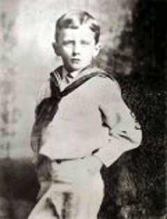 | 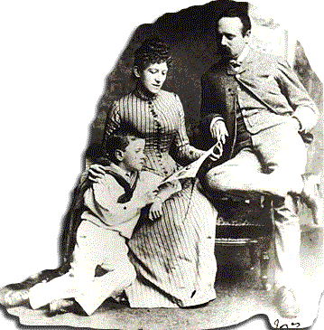 |
В 1891 г. Джеймс не вернулся в Клонговз— нечем было платить за содержание—и два года занимался дома сам по себе, а проверяла его мать.
В апреле 1893 г. двух старших мальчиков семьи Джойсов—Джеймса и Станислауса— бесплатно приняли в иезуитскую школу в Бельведере (Дублин).
Учился Джеймс хорошо, дважды избирался председателем Общества Девы Марии (подростковая католическая организация), но расставание с Бельведером было довольно прохладным, так как иезуитское руководство школы решило, что он утратил католическую веру (и нюх их не подвёл).
Джеймс поступает в Университетский Колледж: Дублина, в котором тоже тогда преподавали иезуитские священики. В колледже он много читает—особенно из нерекомендованого иезуитами—изучает языки (овладел датско-норвежским, чтобы читать в оригинале Генрика Ибсена, которым весьма восхищался).
В 1900 г., когда ему было 18 лет, его статья—обзор пьесы Ибсена КОГДА МЫ, МЁРТВЫЕ, ПРОСНЕМСЯ—была помещена в лондонском журнале "Фортнайт ревью". Столь ранний успех укрепил его в намерении стать писателем и он убеждает семью, друзей и учителей, что его решение оправданно и именно в литературу ему и дорожка.
В октябре 1901 г. он пишет эссе ДЕНЬ ДРЕБЕДЕНИ, в котором дает прикурить—и в хвост, и в гриву—Ирландскому Литературному Театру, чтоб тот не потакал вкусам публики и не ходил бы у неё на поводу.
Жизнь Джеймс вёл распутную, но учебу не запускал и выпускные экзамены сдал даже с одной пятеркой – по латыни.
| 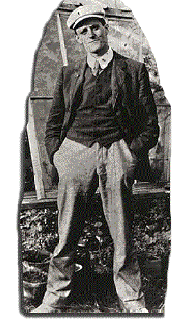 |
31 октября 1902 г. он получает степень Бакалавра Искусств, а в свободное время непрестанно тренируется в писательском ремесле, слагая стихи и экспериментируя с кусками прозы, которые называл "эпифаниями",
с описаниями моментов, когда раскрывается истинная суть какого-то лица или предмета.
Чтобы было на что жить и писательствовать, Джойс решает стать врачом, но, посетив всего пару-другую лекций в Дублинском Университете, берёт в долг денег, у кого придется, и сматывается в Париж, где и думать забыл о занятиях медициной, а вместо того пишет книжные обозрения и много читает в библиотеке Св. Женевьевы.
В августе 1903 г. его вызывают домой – мать при смерти. После похорон, он работает кем попало, даже и учителем, живёт где придется, в том числе и в Башне Мартелло в дублинском районе Сендиков, где нынче располагается музей Джеймса Джойса.
В том же далеком 1903 г. Джойс начинает писать длинный натуралистический роман СТЕФЕН ГЕРОЙ, основанный на событиях его собственной жизни, а в 1904 г. Джордж Рассел предложил ему писать незатейливые рассказики для напечатания в фермерском журнале "Айриш Хомстид" с оплатой один фунт стерлингов за штуку.
Три рассказа
- СЕСТРЫ,
- ЭВЕЛИНА, и
- ПОСЛЕ СКАЧЕК
были напечатаны под псевдонимом Стефен Дедалус, покуда редактор журнала не пришёл к выводу, что работы Джеймса не для его читателей.
Тем временем Джеймс встретил девушку по имени Нора (как у героини Ибсена), в которую влюбился 16 числа июня месяца.
Именно этот день выбрал он впоследствии как Блумодень – день описаный в романе УЛЛИС. Мало-помалу он уболтал её уехать с ним из Ирландии, хотя совершить официальную брачную церемонию он отказался из принципа.
В октябре 1904 г. Джеймс и Нора покинули Дублин. Джеймс получил место в частной школе Берлица в городе Пола (Австро-Венгрия), где в свободное время работал над своим романом и рассказами.
В 1905 г. они переезжают в приморский город Триест, где к ним присоединился его брат Станислаус и родились дети – Джордж и Лючиа.
В 1906-07 г.г. Джойс восемь месяцев проработал в банке в Риме, проклиная всё и вся.
| 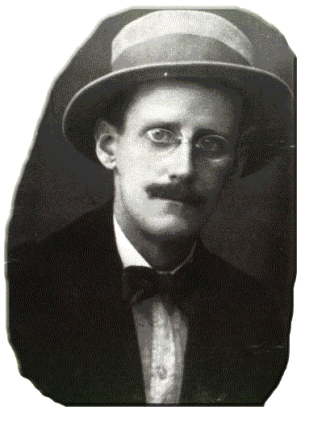 | 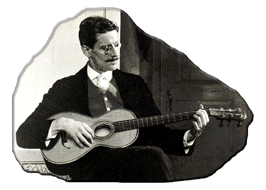 |
По контрасту, Ирландия начинает уже казаться милой и приятной; он пишет брату Стасу, что в своих рассказах он не воздал должного ирландскому гостеприимству. Ранние рассказы, по его словам, писались затем, чтоб показать отупляющую инерцию и обезличенность общества, которые заполонили Дублин, но рассказы эти написаны с живостью придающей особую значимость каждому слову и каждой детали.
Его изучение европейской литературы сосредоточилось на символизме и реализме: в работе начинает проскальзывать синтез этих двух течений. Решив, что его СТЕФЕНУ ГЕРОЮ недостает художественной выверености и шлифовки, Джойс переписывает его как "работу в пяти главах", которой дает название ПОРТРЕТ ХУДОЖНИКА В МОЛОДЫЕ ГОДЫ, чтоб сфокусировать внимание на центральном персонаже.
А в общественной жизни Джеймс сбивает с пути и панталыку итальянского бизнесмена по фамилии Шмиц, который часто ездил по торговым делам в Англию и на этой почве в 1907 г. нанял Джойса, чтоб подучиться английскому.
Они сдружились, Джойс давал ему почитать свои рассказы и тот, начитавшись и наобщавшись, и себе скромненько накропал два романа под псевдонимом Свево, а впоследствии и третий, ИСПОВЕДЬ ЗЕНО, получивший всемирное признание (почему-то в последнюю очередь роман этот был признан в самой Италии).
Но это произошло впоследствии, а в 1907 г. Джойс дважды побывал в Ирландии, пытаясь опубликовать книгу рассказов ДУБЛИНЦЫ и создать сеть ирландских кинотеатров.
Ни то, ни другое не удалось: владелец одной типографии уж даже и набрал было текст рассказов, но потом струсил, как бы за таких ДУБЛИНЦЕВ его не растерзали дублинцы натуральные.
В ходе этих посещений один из бывших друзей Джойса расстроил его сообщением, что летом 1904 г. он пользовался благосклонностью Норы, другой же друг утешал и доказывал, что это все брехня и Нора вовсе тому не давала эту самую благосклонность. Однако, Джойс навсегда почувствовал себя преданым и тема измены проходит во многих его поздних работах.
Когда в 1915 г. Италия объявила войну Австро-Венгрии, австрийские власти интернировали Станислауса, но Джеймсу с семьей разрешили уехать из Триеста в Цюрих, решив, что вряд ли человек с таким зрением сможет участвовать в войне.
| 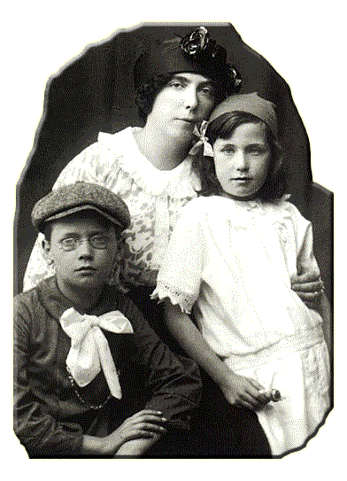 | 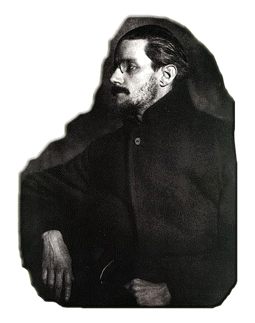 |
Первое время, пока он там давал уроки английского и работал над начальными главами УЛЛИСА, который зародился как очередной рассказ из дублинской серии, его финансовые затруднения были весьма велики. Но чуть погодя он получает крупное денежное воспомоществование от Эдиты Рокфеллер Маккормик, а затем пошел уже ряд воспомоществований от Хариет Шоу Вивер, официальной редакторши журнала "Эгоист" в Лондоне.
К 1930 г. общая сумма этих воспомоществований составила 23, 000 фунтов стерлингов. Щедрость её проистекала, отчасти, из её восхищения его творчеством (в ту пору американский "поэт поэтов", Эзра Паунд, пребывал в Лондоне неофициальным редактором "Эгоиста", определяя вкус и моды литературной богемы и указывая деньжастым богемящимся дамочкам нужные объекты для восхищения), а во-вторых, ей было его жалко, потому как помимо нищеты он боролся ещё и с болезнью глаз, от которой так никогда и не избавился.
С февраля 1917 по 1930 г. он перенес 25 операций на глазах: против воспаления радужки, глаукомы и катаракты, из-за которых он порой становился совершенно слепым.
Несмотря на все это, Джойс не падал духом и продолжал работу – некоторые из самых весёлых его пассажей были скомпонованы именно когда здоровье его становилось всего никудышнее.
| 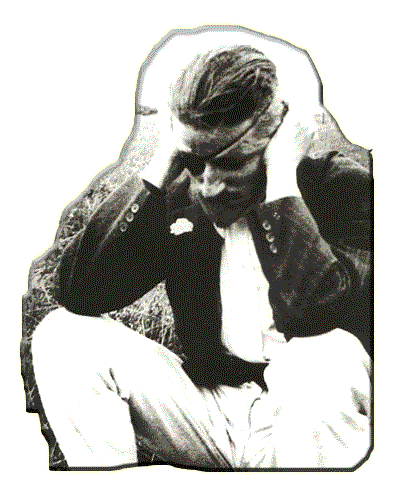 | 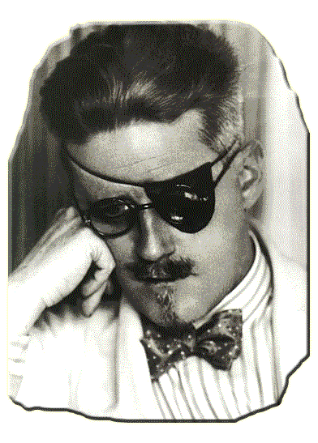 |
Не найдя среди английских издателей кого-либо, кто согласился бы набрать ПОРТРЕТ..., Вивер издала эту книгу сама, заказав печатание листов в Соединенных Штатах, а остальная работа по выпуску книги доводилась в её лондонском издательстве ЭГОИСТ-ПРЕСС, но ещё раньше, 29 ноября 1916 г., книга была выпущена в Штатах издательством Хюбша.
В марте 1918 г., когда у Джойса был подготовлен следущий роман – УЛЛИС, от которого все английские издатели отказывались наотрез, а Эзра Паунд расхваливал что есть мочи, американский журнал МАЛЕНЬКОЕ ОБОЗРЕНИЕ начал печатанье, из номера в номер, эпизодов этого романа, пока книгу не запретили в 1920 г.
По окончании первой мировой войны Джойсы на пару месяцев вернулись в Триест, а затем, по приглашению Эзры Паунда, переехали в Париж. Там и был опубликован УЛЛИС 2 февраля 1920 г.
Издала его Сильвия Бич, ещё одна состоятельная любительница искусств из Америки, у которой в Париже была типография со скромным названием "ШЕКСПИР и К°".
Наборщики типографии английским не владели и она предоставила Джойсу, право проводит корректуру и правку оттисков, на что уходило много времени, зато он имел возможность вносить изменения.
| 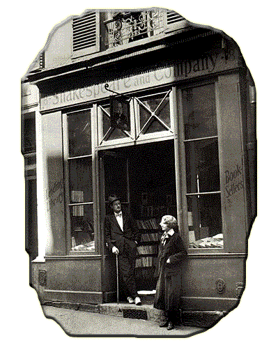 | 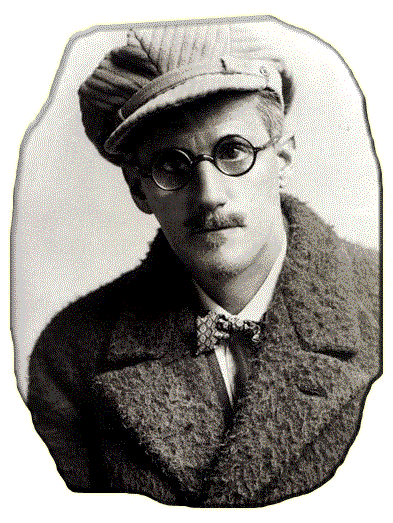 |
Почему английские издатели шарахались от романа?
Во-1-х, из-за его непонятностей: какой читатель согласится покупать книгу, где в некоторых местах, читая страницу за страницей, ни бельмеса не можешь врубиться?
Ещё в ходе первой мировой войны Джойс посылал в Англию из Швейцарии копию некоторых эпизодов УЛЛИСА, чтобы найти издателя, а по случаю войны почтовая переписка подлежала проверке и когда на почте вскрыли эпизод Сирены, то враз и арестовали всю бандероль, сочтя всё это закодированым шпионским посланием. Потребовалась целая экспертиза для доказательства, что шифра тут нет, а просто это такое художество в прозе.
Второй причиной отказа английских издателей было то, что в некоторых местах, где читателю не шифровались мозги, пёрла такая похабщина, что непонятно как её и бумага-то выдерживает, а чтобы такое было пропущено цензурой – и думать не моги.
Изданный в Париже УЛЛИС, который и без того был уже достаточно знаменит из-за стычек с цензурой, после публикации моментально прославился.
Джойс сумел подготовить критику к приёму романа, растолковав французскому писателю-эстету Валери Ларбо что к чему в его книге, а тот, в свою очередь, выступил с комментариями и лекциями, что УЛЛИС построен как современная параллель гомеровской ОДИССЕЕ.
Все события романа происходят в Дублине в один всего лишь день – 16 июня 1904 г.
Его центральные три героя – Стефен Дедалус (из раннего романа ПОРТРЕТ ХУДОЖНИКА В МОЛОДЫЕ ГОДЫ), Леопольд Блум, рекламный агент еврейской национальности, и его жена Молли Блум – предположены как современные Телемах, Уллис (Одиссей) и Пенелопа.
Применяя приём внутреннего монолога (пояснял Ларбо) писатель вскрывает самые глубинные мысли и чувства этих персонажей, пока они живут, час за часом, переходя из общественной бани на похороны, в библиотеку, в роддом, в бордель.
И каждый эпизод (глава) отражает определённое ремесло (искусство) или науку, содержит свой особный символ, представляет один из органов человеческого тела, имеет свой цвет и происходит в определённое время.
Сам Джойс никогда не опубликовывал этот план эпизодов, более того, он даже снял названия глав, когда они ещё были в наборе.
В Париже Джойс работает над ПОМИНКАМИ ПО ФИННИГАНУ – название романа хранилось в секрете, в заметках и интервью его именовали просто Текущая Работа, пока он не был опубликован в мае 1939 г.
Вдобавок к своим хроническим болезням глаз, Джойс переживал огромную и затяжную тревогу из-за психического здоровья своей дочери. То, что в ней сперва казалось легкой эксцентричностью, переросло в несомненное и буйное душевное расстройство, которое Джойс пытался излечить чем только можно, но в конце концов стало необходимым поместить её в психбольницу под Парижем.
| 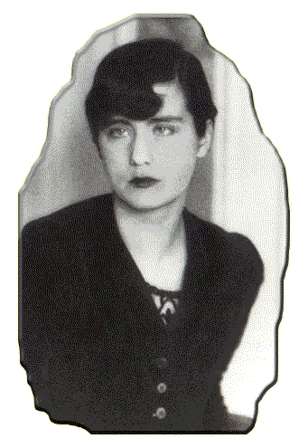 | 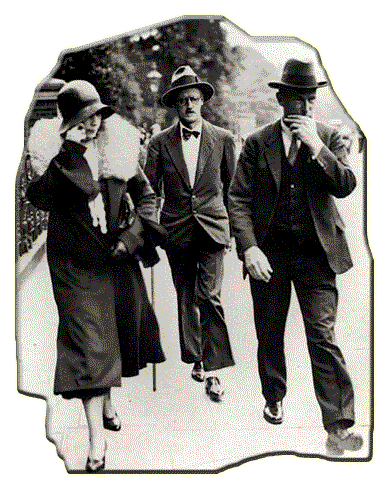 |
В 1931 г Джеймс и Нора побывали в Лондоне, где они вступили в законный брак – его принципиальность в этом вопросе уступила нареканиям дочери ("может, я оттого и чокнутая, что незаконная").
Между тем он писал и многажды переписывал части ПОМИНОК. Некоторые отрывки переделывались десятки раз, пока он становился доволен.
В одном из основных смыслов, книга является историей владельца бара из Чэплзода, возле Дублина, его жены и троих их детей. Но вместе с тем, м-р Хэмфри Чимпден Ервикер (часто обозначаемый просто набором его инициалов НСЕ, которые можно истолковать и как "here comes everyone" ("под это всяк подходит"), Анна Ливия Плурабелла, Кевин, Джерри и Изабель являются любой из семей рода человеческого, архитипичная семья, о которой мечтают все люди.
Итальянский мыслитель XVIII столетия, Джианбатиста Вико, поставил автору основополагающую теорию: о цикличном круговращении истории. Чтобы продемонстрировать это, книга начинается концом предложения оставшегося недописаным на её последней странице.
Сама книга – это тысяча снов в одном. Сплав всевозможных языков, например, Анна Ливия расчесывает свои vlosyhair (какой словарь английского языка пояснит, что wlosy это "волосы" по-польски?), или дует a bad of wind (с точки зрения граматики bad тут вообще неупотребимо, но по-турецки bad -"ветер"). Возникают, сплетаются и исчезают литературные и
исторические персонажи, покуда the intermisunderstanding minds of anticollaborators продолжают снить дальше.
На ином уровне романа главными героями являются Дублин и река Лиффи, которая чарующе струится из главы в главу leaning with the sloothering slide of her, giddygaddy, grannyma, gossipaceous Anna Livia, a вместе они представляют историю Ирландии и—далее—всего человечества.
И во всей книге присутствует сам Джойс, пошучивая, дразня своих критиков, отстаивая свои теории, вспоминая отца, потешаясь от души.
После падения Франции во второй мировой войне (1940 г.), Джойс увёз свою семью обратно в Цюрих, где и умер, всё ещё расстроенный приёмом оказанным его последней книге.
Что делать – читатели тоже люди и не слишком-то отличаются от степанакертских школяров, которым то, что непонятно – "тупой пен".
Джойсова тонкая и откровенная передача людской натуры, вкупе с его мастерским владением языком и блестящей техникой по развитию литературных форм, сделали его одним из главенствующих вдохновителей романистов XX столетия.
| 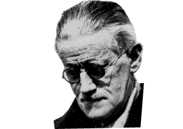 | 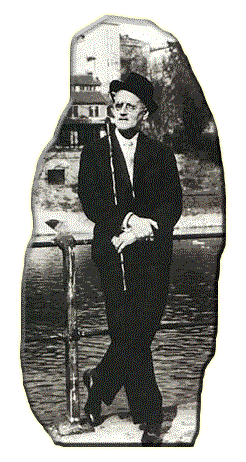 |
Нынче УЛИС воспринимается уже как великий шедевр, двое из персонажей которого— Леопольд Блум и его жена Молли— изображены с полнотой и теплом человечности непревзойденными в области литературы.
Замечателен и Джойсов ПОРТРЕТ ХУДОЖНИКА В МОЛОДЫЕ ГОДЫ близостью контакта читателя с центральной фигурой и который содержит изумительно живые пассажи.
15 собранных в ДУБЛИНЦАХ рассказов в основном сосредоточены на мерзостях дублинской жизни, но "Мертвые" – один из великолепнейших рассказов в мировой литературе.
Относительно последнего романа, ПОМИНКИ ПО ФИННИГАНУ, мнения критиков остаются разделившимися: вселенская грёза об ирландской семье, скомпонованная в многоязыковом стиле и на множестве уровней, направлена на многозначность и хотя при первой попытке прочтения книга кажется непостижимой, она полна поэзии и остроумия, содержит пассажи невиданной красоты.
Прочие работы Джойса: стихотворные сборники
- КАМЕРНАЯ МУЗЫКА (1907),
- ПЕРСИКИ – ПЕННИ ШТУКА (1927),
- СОБРАНИЕ СТИХОТВОРЕНИЙ (1936),
и пьеса ИЗГНАННИКИ, хотя и написаны со знанием дела и на высоком профессиональном уровне, мало что добавляют к его международной значимости.